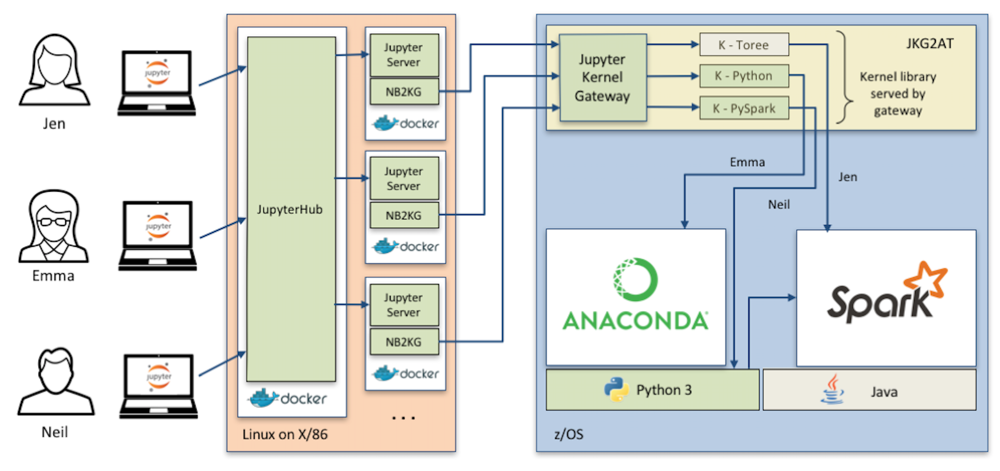

Ecosystem
Data analytics environments are cross-platform and hybrid by nature. Enterprise analytics environments don't generally exist in monolithic configurations.
Although not a part of the offering, IzODA has an ecosystem of companion runtime capabilities that enable data scientists to develop analytics applications for the enterprise. These include popular interfaces, like Jupyter notebooks to drive workloads to z/OS-based analytics stacks like Spark and Anaconda/Python.

The IzODA team has created a set of configurations based on Jupyterhub and Jupyter Kernel Gateway that makes deployment of Jupyter notebook infrastructure easier. These configurations enable encrypted communication between the notebook server and z/OS host, and establish end user identity that allows better management of resource access an allocation on z/OS.

See the IzODA Jupyterhub github repo for downloads and a detailed description of this configuration.